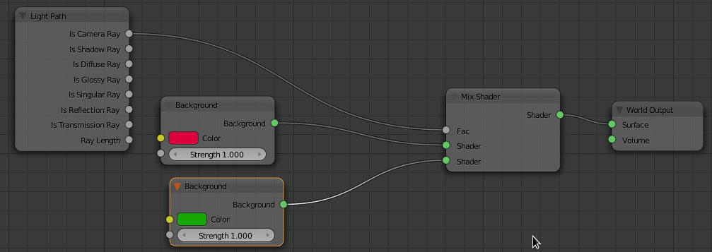
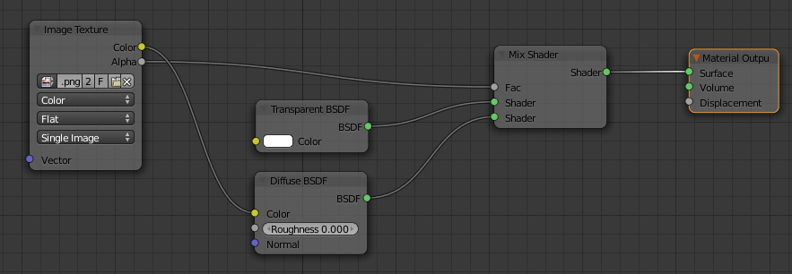
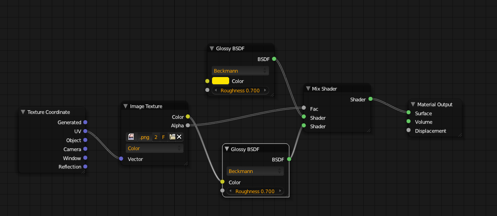
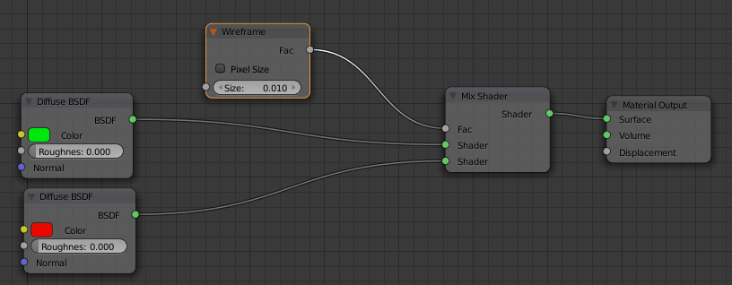
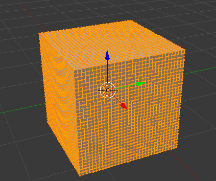
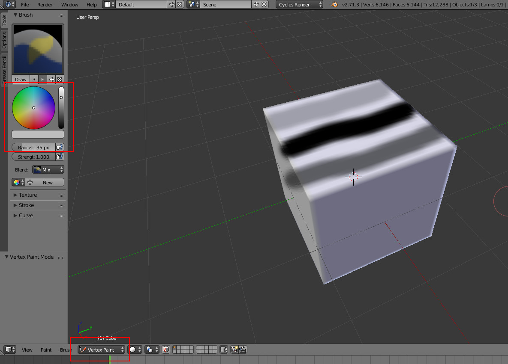
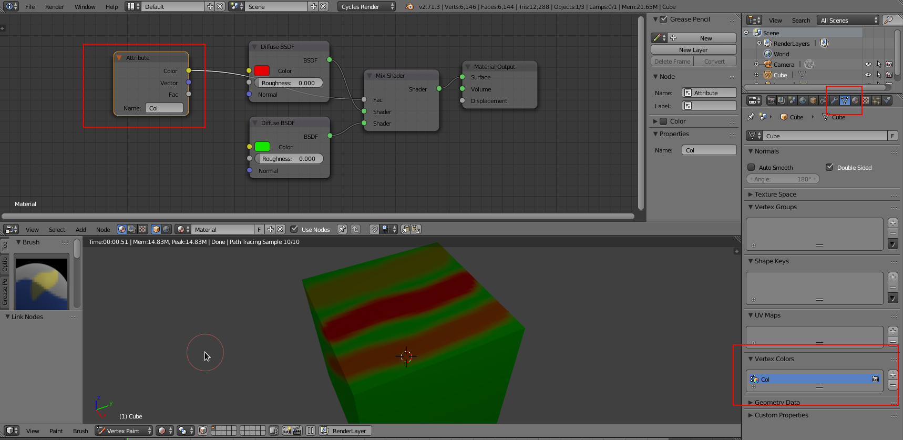
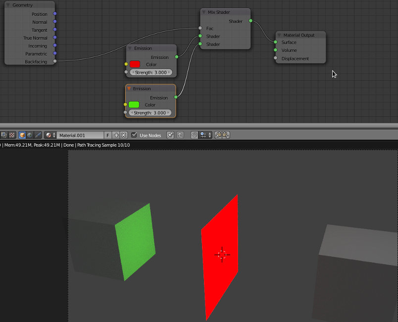

Algumas configurações de nós úteis
Cores diferentes para o fundo e para o ambiente
A configuração abaixo, utilizada no World, permite utilizar cores diferentes para o fundo e para o ambiente. Ou seja, pode modificar a cor de fundo sem que esta afete a iluminação ambiente.
Utilizar uma imagem com Alpha
A configuração abaixo, utilizada num objeto, permite utilizar uma imagem com Alpha. A configuração mistura transparência com Diffuse. Se não quiser transparência, substitua o nó Transparent com outro a seu gosto. Veja a segunda configuração.
 Cor aleatória
Cor aleatória baseada num valor Random. Se aplicar este mesmo material a 4 objetos diferentes irá obter 4 cores diferentes.

Wireframe
O nó Wireframe permite criar triângulos visíveis. Neste caso, as faces são verdes e a linhas que definem os triângulos são vermelhas.
Para mais opções, sugere-se a consulta do texto Renderização de wireframes.
Misturar shaders com Vertex Paint
Comece por subdividir um cubo. Vamos pintar vértices com diferentes pesos e, portanto, quanto mais vértices tivermos maior a precisão da pintura.
Ative o modo Vertex Paint e pinte com diferentes graus cinza ou preto diferentes áreas du cubo.
O Blender criou automaticamente um mapa de cor e deu-lhe o nome Col. Pode alterar o nome mas vamos utilizar o nome pré-definido.
Crie uma configuração de nós para misturar duas cores. Como fator (Fac) de mistura utilize o Attribute (Input) e escreva o mesmo nome (Col) na caixa Name. Ou seja, irá usar o mapa Col para definir a mistura das duas cores.
Esta técnica também pode ser utilizada no Blender Internal Render com o editor de nós de materiais.
Plano com 2 cores diferentes
A opção Backfacing do nó Geometry permite separar dois lados de um mesmo plano. Ou seja, é possível misturar 2 materiais mas apresentar apenas um em cada lado do plano.
Com shaders Emission esta opção é particularmente útil, permitindo emitir cores diferentes nos dois lados do plano ou emitir só de um lado (o outro tem um shader Transparent).
